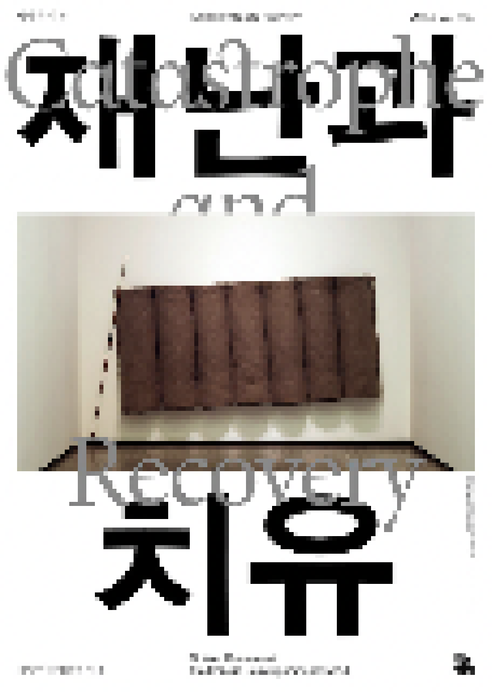

> title
재난과 치유
> content
* 코로나19 상황으로 《재난과 치유》 전시 개막일과 전시기간이 변동되었음을 알려드립니다. 미술관 방문에 참고
부탁드립니다.
《재난과 치유》는 전 지구적인 팬데믹의 상황을 동시대적인 관점에서 살펴보고 현재에 대한 탐구와 성찰을 통해
미래에 대한 모색을 제시하고자 기획되었다. 현재진행형의 팬데믹을 주제로
전시를 기획한다는 것은 복합적인
난제를 야기했다. 그럼에도 불구하고 길게 오래도록 지속되는 예측불허의 팬데믹을 기록하고 숙고하며 현재의 재난이 개인과 사회에 미친 영향과 변화를 예술적으로 발화하는 것은 유의미한 일이라고
믿는다.
모두 다섯 개의 소주제로 구성된 이번 전시는 코로나19 발생과 확산을 둘러싼 징후와 현상을 다양한 관점에서 고찰하는 것으로부터 시작된다. <징후와 증상>에서 작가들은 팬데믹의 사회적,
개인적 현상들을 기록하고
재해석한 작품을 통해 바이러스와 인간의 공존, 재난 속에서 살아가는 인간의 모습을 그린다. ‘집콕’은 전염의 시대를 대변하는 대표적인 용어가 되었다. <집콕, 홀로 같이 살기>는 팬데믹이
사람들 간의 물리적
거리를 만들었지만 아이러니하게 모두가 연결되어 있음을 느끼게 한다. 또한 각자 불가피한 고립이 요구되는
상황 속에서 거리두기가 불가능한 삶을 사는 사회 취약층의 현실을 통해 재난의
불평등을 인식하게
한다. <숫자와 거리>는 팬데믹의 상황에서 중요한 위치를 확보하게 된 ‘수’와 ‘거리’를 재해석한다. 숫자는 현재를 투영하는 기준이 되거나 통계, 데이터와 함수관계 속에서 정보
이상의 다중적 의미를
갖는다. <여기의 밖, 그곳의 안>은 문명의 질주를 멈춘 비대면 시대에 삶의 공간을 다르게
사유하도록 한다. <유보된 일상, 막간에서 사유하기>는 유보된 일상의 틈에서
인간과 이외의 생명종이
공존하는 삶에 대한 성찰과 인식체계의 전환을 제안한다.
